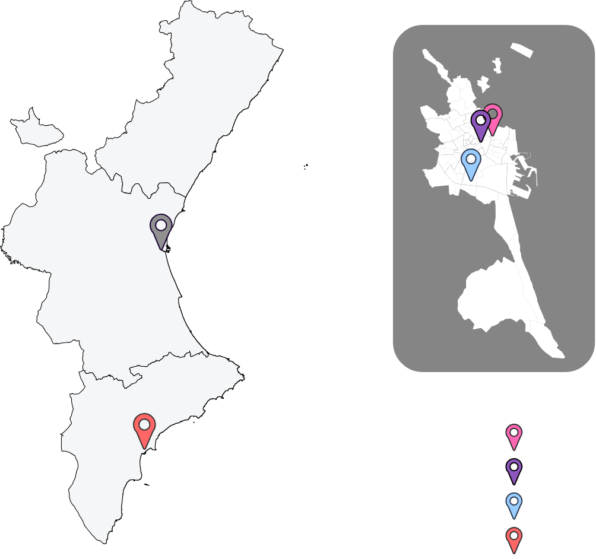

{{ princ_tag }}
{{ princ_title }}
01
{{ p1_title }}
{{ p1_sub }}
02
{{ p2_title }}
{{ p2_sub }}
03
{{ p3_title }}
{{ p3_sub }}
04
{{ p4_title }}
{{ p4_sub }}
05
{{ p5_title }}
{{ p5_sub }}
{{ p6_title }}
{{ p6_sub }}
{{ utile_tag }}
{{ utile_title }}
{{ utile_intro }}
{{ utile_by }}
{{ lbl_actores }}
{{ act_provider }}
{{ act_coord }}
{{ act_dev }}
{{ lbl_entidades }}
{{ e1_title }}
{{ e1_sub }}
{{ e2_title }}
{{ e2_sub }}
{{ e3_title }}
{{ e3_sub }}
{{ e4_title }}
{{ e4_sub }}
{{ lbl_arquitectura }}
Data
cache
CORE
monitor
⋮
Data
cache
CORE
monitor
{{ utile_nodes }}
GRID
monitor
Dashboard
API
ML
{{ utile_foot }}
{{ fl_tag }}
{{ fl_title }}
{{ fl_sub }}
{{ fl_phase_word }} 1 · {{ fl_step1_title }}
{{ fl_phase_word }} 2 · {{ fl_step2_title }}
{{ fl_phase_word }} 3 · {{ fl_step3_title }}
{{ fl_phase_word }} 4 · {{ fl_step4_title }}
1
{{ fl_step1_title }}
{{ fl_step1_sub }}
2
{{ fl_step2_title }}
{{ fl_step2_sub }}
3
{{ fl_step3_title }}
{{ fl_step3_sub }}
4
{{ fl_step4_title }}
{{ fl_step4_sub }}
{{ part_tag }}
{{ part_title }}
{{ part_sub }}
{{ legend_model }}
{{ legend_params }}
{{ coordinator_label }}
{{ nodes_label }}


{{ provider_label }}

{{ part_footnote }}
{{ map_tag }}
{{ map_title }}
{{ map_sub }}
- {{ map_n1 }} {{ map_c1 }}
- {{ map_n2 }} {{ map_c2 }}
- {{ map_n3 }} {{ map_c3 }}
- {{ map_n4 }} {{ map_c4 }}

{{ map_foot }}
{{ tech_tag }}
{{ tech_title }}
{{ tech1_title }}
{{ tech1_sub }}
{{ tech2_title }}
{{ tech2_sub }}
{{ tech3_title }}
{{ tech3_sub }}
{{ tech4_title }}
{{ tech4_sub }}
{{ tech5_title }}
OMOPFHIRDICOMSNOMED-CT
{{ val_tag }}
{{ val_title }}
- {{ val_li1 }}
- {{ val_li2 }}
- {{ val_li3 }}
- {{ val_li4 }}
- {{ val_li5 }}
{{ evo_tag }}
{{ evo_title }}
{{ evo1_title }}
{{ evo1_sub }}
{{ evo2_title }}
{{ evo2_sub }}
{{ evo3_title }}
{{ evo3_sub }}
{{ concl_title }}
{{ concl_sub }}